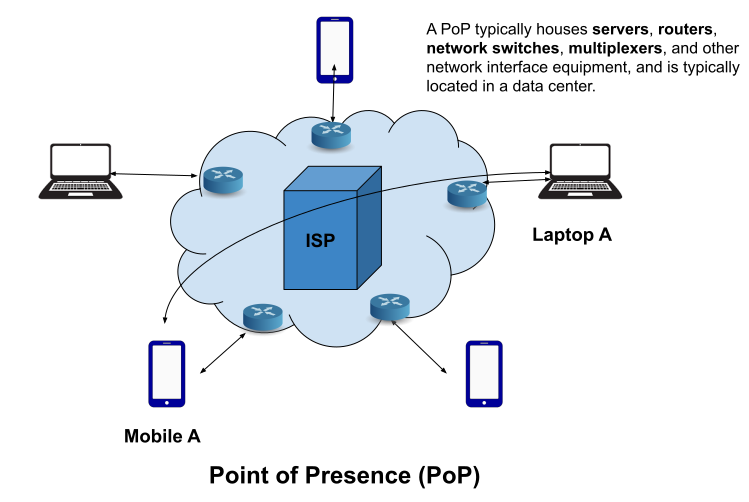
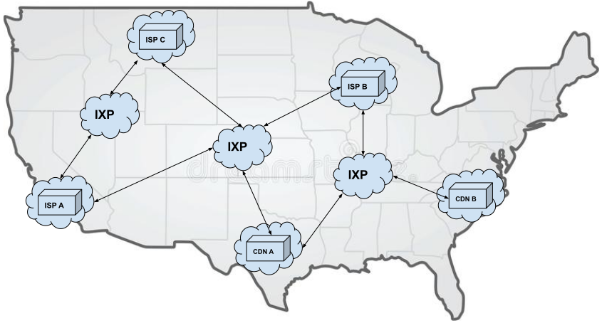
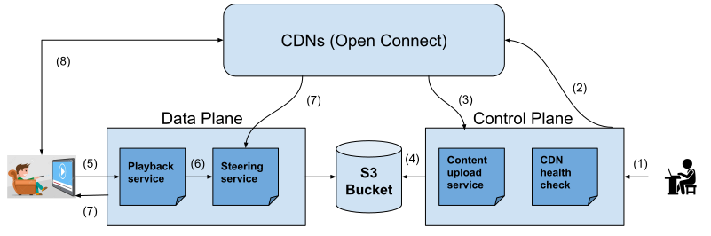

Netflix System Design

Objective
In this article, the system design of the most popular video streaming platform, Netflix will be discussed.
System Design Overview
There are two types of users of the system. The content creator and the viewer. The overall system can be derived into the following components.
Content Delivery Network (CDN)
A content delivery network (CDN) refers to a geographically distributed group of servers which work together to provide fast delivery of Internet content. CDN inproves the loading time of frequently visiting websites, reduces bandwidth costs, increases
content availability and redundancy, and improves the website security.
Netflix uses customized CDNs which are known as Open Connect. There
are two main components of Open Connect.
- Embedded Open Connect Appliances (OCAs)
- Settlement-free interconnection (SFI)
- Embedded in Internet Service Provider (ISP) network.
- Provides the same capabilities and services as the OCAs that Netflix uses in their own data centers (60+).
- Connect via direct Private Network Interconnect (PNI) or Internet Exchange Point (IXP)-based SFI peering to Netflix Open Connect Appliances. An Internet exchange point (IX or IXP) is the physical infrastructure through which Internet service providers (ISPs) and content delivery networks (CDNs) exchange Internet traffic between their networks.
Level of Internet Infrastructure
- Point of Presence: A point of presence (PoP) is an interface point between communicating entities. A common example is an Internet point of presence, the local access point that allows users to connect to the Internet with their Internet service provider (ISP). Point of Presence (PoP) is considered as Level 1 in Internet Infrastructure. Same ISP networks connect themselves through fiber optics cables where users who are using the same ISP can communicate among themselves. It is called connecting Points of Presence and is considered as Level 2. 
- Internet Exchange Points: An Internet exchange point (IX or IXP) is the physical infrastructure through which Internet service providers (ISPs) and content delivery networks (CDNs) exchange Internet traffic between their networks. In these points, the fiber optic cables of different ISPs connect together to pass the traffic from the user of one ISP to the user of another ISP. This physical infrastructure is considered as Level 3 in Internet Infrastructure. ISPs interconnect with each other at exchange points to allow their customers to communicate. More recently, exchange point customers are often content providers, who peer with ISPs to get their content to the ISPs’ customers. Content providers also connect to exchange points to exchange traffic with each other. To connect the whole world, IXPs exchange traffic through fiber optic cables which go under the deep sea to different countries all over the world. The global internet is referred to as Level 4 in Internet Infrastructure. 
Control Plane
- Responsible for uploading new content that will be distributed over the OCAs.
- Responsible for file and data storage, and sharding.
- OCAs health check: Periodic health check of OCA services, learn about playback experience, and responsible for optimization.
- Content upload service: Responsible for uploading content from the content provider and distribute the content to OCAs. Store the metadata information of uploaded video contents in data storage.
Data Plane
- End-user interacts with this plane while playing the video content.
- It receives the end-user request for video content and returns the URLs of the nearest CDNs from where the requested content can be delivered.
- Playback Service: Determines the specific files from the user request.
- Steering Service: Determines the optimal CDN URLs for the requested content.
Design Overview
- The content creator uploads the video contents to the control plane. Content upload service handles the operation.
- The uploaded video contents are distributed to the OCAs which are geographically distributed for better-optimized content delivery to the end-users.
- The OCAs report the health status of the uploaded contents, information regarding stored contents, the optimal BGP routes, and so on.
- The video contents are stored in persistent data storage (e.g., Amazon S3) and the metadata regarding the video contents are stored in the database (e.g., Amazon Dynamo).
- The user requests for video content by playing the video which is sent to the playback service in the data plane.
- The Playback service determines the requested video content and delegates the operation to the steering service.
- The Steering service looks for the optimal OCAs from where the content can be served and generates the URLs which is provided to the user.
- The user requests the OCA through the URL for the video content that they are searching for and the OCA serves the requested contents to the user which gets rendered to the user device.